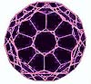

Inevitable Future?
Drexler's prediction of the future rings of inevitability. But how is
this future going to come about? While Drexler the futurist was making his
predictions about a future run by nanotechnology, chemists were making discoveries
that could potentially make those visions a reality.
Buckyballs
My curiosity about the future that Drexler pictures led me to another
book entitled Fullerene C60 - History,
Physics, Nanobiology, Nanotechnology. The pages of this volume are
filled with the theoretical and practical potentials of nanotechnology from
the chemist's point of view. Yet surprisingly the underlying theme seems
to be a belief in what some might call coincidences, but what this book
implies is serendipity.
Research as early as 1970 by a Japanese researcher predicted
the existence of the C60 molecule. In Russia, scientists
submitted an article based on the experimental works of two American scientists
related to the possibility of C60.